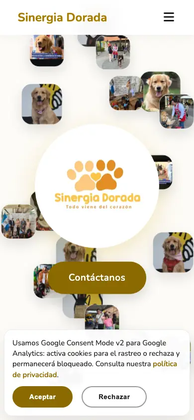

D—01 · Runtime
Vanilla HTML, CSS and JS
No framework runtime or build-time app platform. The trade-off: more care in DOM coordination as features grow.
Source note ↗Technical Report · Vol. 03 · 2026
Sinergia Dorada brings dog-assisted therapy to communities across Guatemala. Its team can update the site without a developer, with no server to maintain.

The brief
The nonprofit needed volunteers to publish updates, near-zero hosting cost, a quick experience on mobile networks, accessible content, and no third-party tracking cookies.
Architecture
Static data becomes independent browser bundles. CI checks each change before files reach S3 and CloudFront; the browser receives a cacheable site without an application server.
Read the diagram as a list
How it works
The JSON bundled with the page renders immediately as a fallback. The browser then fetches the editable live JSON and updates the page. Section flags decide what appears; independent bundles communicate through the DOM.


Decisions worth defending
Each choice solves a constraint and names its cost. The footnotes point to the source that implements it.
D—01 · Runtime
No framework runtime or build-time app platform. The trade-off: more care in DOM coordination as features grow.
Source note ↗D—02 · Content
Structured files make volunteer updates reviewable in Git. The trade-off: editing still happens through a pull request.
Source note ↗D—03 · Delivery
A custom domain, HTTPS and HSTS, with a redirect for www and cache behavior by asset type. The trade-off: deploy configuration lives in AWS.
Source note ↗D—04 · Caching
Without hashed filenames, HTML is cached for 60 seconds, code and content for 5 minutes, and static assets for 7 days. The trade-off: invalidation and cache policy need discipline.
Source note ↗D—05 · Privacy
No Google Fonts or third-party font requests. The trade-off: local assets need their own updates.
Source note ↗D—06 · Monitoring
A deferred local SDK subset keeps error monitoring outside the initial page path. The trade-off: errors before it loads are not reported.
Source note ↗D—07 · Supply chain
Workflow dependencies use immutable commit references, and main is protected. The trade-off: action updates require deliberate review.
Source note ↗D—08 · Images
Pre-sized dog photos keep mobile downloads modest. The trade-off: source images need a maintained set of variants.
Source note ↗Quality & security
The checks run before merge and protect the small, static architecture from quiet regressions.
Recent chapters
#83 · SEO foundation
Canonical URLs, metadata and structured data.
#84 · Useful 404
A route for pages that are not found.
#85 · AA contrast
Color choices brought up to contrast requirements.
#86–87 · Performance
WebP image handling, local font preload and mobile rendering.
Principles
Make the update path clear for the people who use it.
Keep infrastructure small enough to explain.
Make the experience work for more people.
Catch regressions before they reach visitors.
Contact
I build clear, resilient websites for teams doing work that matters.
Have a role or an ongoing need?
Start a conversation ↗Tell me what your organization needs.
Discuss a project ↗